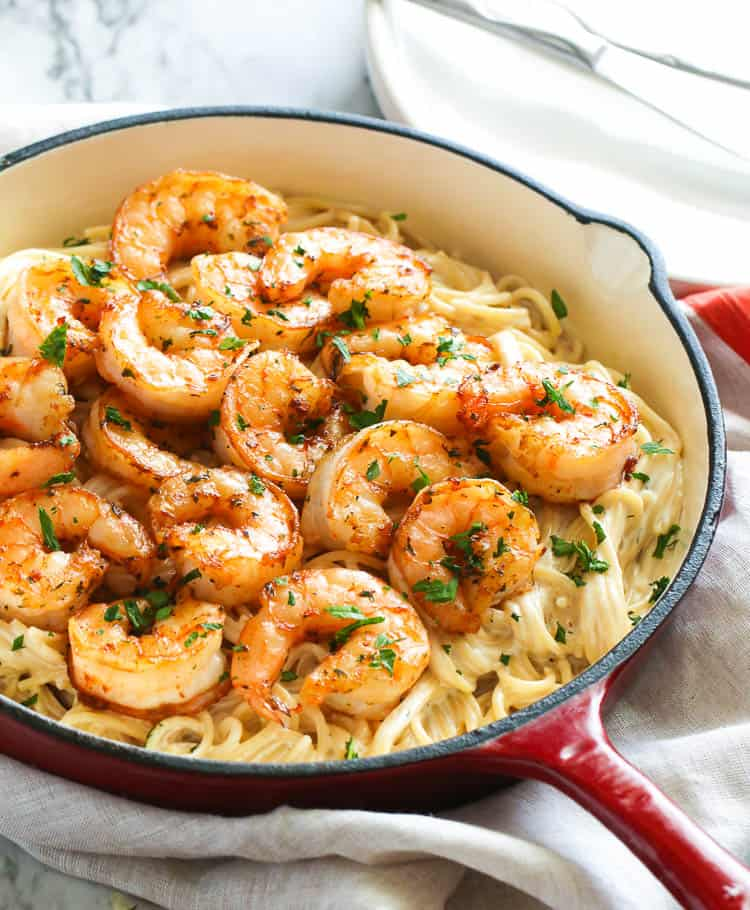

Shrimp Alfredo Recipe

A Beautiful Shrimp Alfredo Served Over a Bed of Pasta
The shrimp is served over a warm bed of pasta. The entire dish is
coated in a warm, homemade creamy alfredo sauce seasoned to perfection.
Ingredients
- Butter
- Garlic
- Heavy Cream
- Red Pepper Flakes
- Italian Seasoning
- Salt
- Pepper
- Shrimp
- Pasta
Steps
- Melt the butter in the pan
- Once butter is melted, add garlic and cook until fragrant
- While waiting, begin boiling pasta
- When garlic is done, add heavy cream and bring to a simmer
- Add seasonings and whisk to combine
- Strain pasta
- Combine shrimp with strained pasta in pot
- Add alfredo sauce to pot and stir to combine
- Grab your biggest bowl and serve yourself